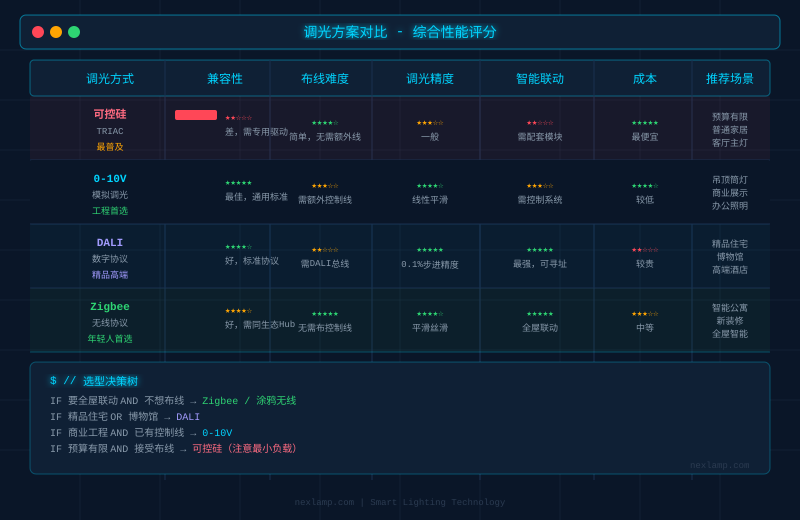
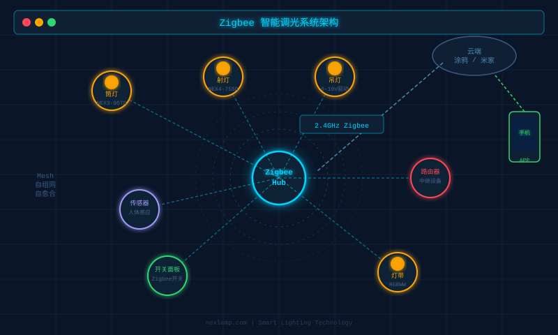

智能灯频闪和调光器不兼容？一篇文章彻底搞懂
装修完，买了一堆智能筒灯，结果问题来了：调暗到30%就开始闪烁，换了开关还是不行，有时候甚至关掉灯还有"鬼光"……
这是2026年小红书和知乎上讨论最热的智能家居坑之一。不是灯坏了，也不是你运气差，是驱动电源和控制方式没匹配好。
本文从根本原因讲起，给你一个能实际落地的解决思路。
一、频闪是什么？为什么让人头疼
频闪（Flicker），就是灯光亮度以肉眼可见（或不可见）的频率快速变化。
人眼可以感知100Hz以下的闪烁，100Hz以上虽然看不出来，但长时间暴露会导致眼疲劳、头痛，对光敏感人群（偏头痛患者）尤其有害。
LED灯本身不会产生频闪，问题几乎100%出在驱动电源上。
二、频闪的3大根源
根源1：PWM调光频率过低
调光最常见的方式是PWM（脉宽调制）——驱动电源以极快的速度开关电流，通过占空比控制平均亮度。
| PWM频率 | 表现 |
|---|---|
| < 100 Hz | 肉眼可见闪烁，完全不可接受 |
| 100–1000 Hz | 部分人能感知，手机录像会出现条纹 |
| 1000–3000 Hz | 大多数人感觉良好 |
| > 3000 Hz（无频闪） | 最优，适合卧室、儿童房 |
根源2：单火开关的"漏电流"问题
市面上大量智能开关是单火线取电（不需要零线），原理是通过灯具漏一点电来给开关自身供电。
这个"漏电"（通常0.3–1mA）平时你感觉不到，但遇到以下情况就会出问题：
- 功率太小（< 5W）：漏电流相对于灯具总功率比例太高，灯不完全熄灭，出现"鬼光"
- 多灯并联：漏电流叠加，低功率场景下尤其严重
- 驱动输入端阻抗低：漏电流在驱动内部产生电压波动，变成调制信号，灯就闪了
根源3：驱动最小负载限制
每个调光驱动都有一个最小可调负载。比如一个支持1–10A的可控硅调光器，如果你只接了一盏3W小灯，实际功率远低于调光器的最小工作区间，就会出现：
- 调不下去——到某个亮度就跳回最亮
- 间歇性闪烁——驱动在最小工作边界来回抖动
三、调光器不兼容的4种表现
遇到以下任一情况，基本可以判断是控制方式与驱动不匹配：
四、常见调光方案对比与选型建议
选对控制方式，就能从根源避开80%的问题。

可控硅调光（TRIAC）
最便宜、最普及，但兼容性最差。需要驱动专门支持可控硅调光，且灯具数量不能太少。适合：预算有限的客厅主灯场景。0-10V调光
在工程领域用了几十年，稳定可靠。调光器输出0–10V模拟信号给驱动，驱动无需特殊适配，兼容性最好。缺点是需要多走一根控制线。适合：吊顶筒灯、商业展示照明。DALI（数字可寻址照明接口）
每盏灯都有独立地址，可单独控制、分组调光，精度高（0.1%步进）。适合高要求的精品住宅和办公场景，支持情景模式和日照补偿。需要DALI控制器（成本较高）。Zigbee / 涂鸦无线调光
年轻人最喜欢的方案。不需要布控制线，通过手机APP或语音控制，可以和全屋智能系统联动（米家、HomeAssistant、涂鸦生态）。关键是买支持无线调光的驱动版本，不是所有筒灯都支持——Nexlamp的COB射灯系列专门提供涂鸦Zigbee调光版本，驱动内置无线模组，开箱即用。

五、实战：遇到频闪怎么排查
按这个顺序检查，10分钟内能定位90%的问题：
第1步：排除电气问题
用手机相机（慢动作模式）对着灯拍，如果画面里有滚动条纹，说明是低频PWM引起的频闪，问题在驱动，换驱动。
第2步：检查开关类型
看开关背后接线：只有L（相线）接入、没有N（零线）的，就是单火开关。换成双火或直接改用Zigbee无线开关（无需改线）。
第3步：检查灯具数量与调光器额定
查调光器铭牌上的"最小负载"，把实际接入的灯具总功率加起来，必须高于最小负载的1.5倍以上。
第4步：验证驱动调光模式
涂鸦/米家调光灯，APP里把调光模式改为"冷调光"试一下；Zigbee2MQTT用户检查TS0601设备的light_brightness_step参数是否过大。
六、选购时应该问的3个问题
下次买调光灯，直接问厂家或客服：
小结
频闪和调光不兼容，本质是驱动电源的调光方式、频率、最小负载与控制系统不匹配。
- 追求免布线、联动全屋智能 → Zigbee/涂鸦无线调光
- 追求高精度、工程品质 → DALI
- 预算有限但稳定性要求高 → 0-10V
- 已有可控硅调光系统 → 买兼容可控硅的调光驱动，注意最小负载
Nexlamp NEX3/NEX4系列射灯和筒灯提供开关版、涂鸦Zigbee版、DALI版、0-10V版、可控硅版共5种控制方式，覆盖各种控制场景。有具体选型问题欢迎联系：13825496855